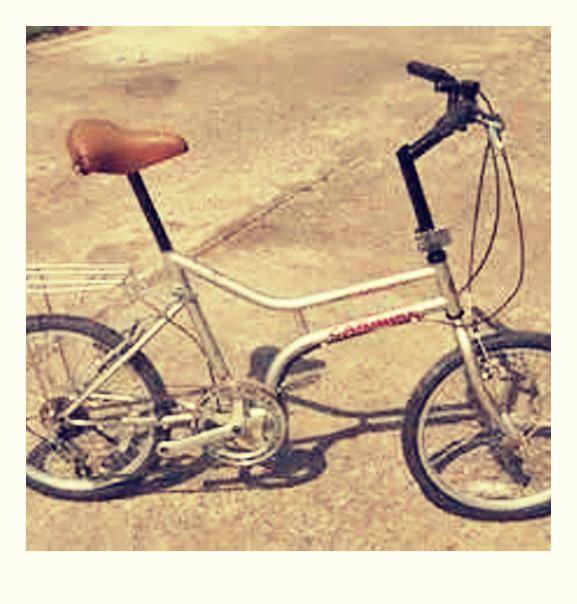

ParaBicychologie
ParaBicychologie
© Copyright - administrateur Bicy Gonzo.

- Accueil >>> index des traductions >>> tourisme en vélo pliant
Y a-t-il un vélo pliant dans votre futur? et Tourisme en Vélo Pliant.
Nous présentons ci-dessous Y a-t-il un vélo pliant dans votre futur? ( Is There a Folder In Your Future ), et, Tourisme en Vélo Pliant ( Touring on a Folder ) deux récits courts de - ce sont des histoires vraies - Jim Foreman, auteur, photographe, voyageur...
Nous avons traduit ces récits courts en français
Jim Foreman
Y a-t-il un Vélo Pliant dans votre Futur?
( Is There a Folder In Your Future )
2013 : Traduit de l'anglais.
Site officiel de Jim Foreman : www.jimforeman.com
Lien vers la page du site de Jim Foreman où est publié Is There a Folder In Your Future
Is There a Folder In Your Future - 2000
Y a-t-il un Vélo Pliant dans votre Futur? – traduction de l'anglais par Brothel & Cie inc.® ™ - 2013
Publié sur : Bicy Gonzo et la bicyclette de plus, la bicyclette littéraire
# # #
Y a-t-il un Vélo Pliant dans votre Futur?
Mes premières réactions à l'idée d'un vélo pliant à roues de 20 pouces furent des visions de nez rouge en caoutchouc mousse, de chaussures d'Auguste, ou autres choses que mon petit-fils pourrait conduire. Ce n'est qu'après avoir vu quelques uns de ces vélos que j'ai commencé à réaliser que bien qu'ils aient de petites roues, ils ont une géométrie et se conduisent comme les vélos classiques. Aussi, l'idée de pouvoir en transporter un en avion comme bagage, au lieu de payer des frais de cargaison de 65$ à chaque fois que vous allez quelque part avait un certain attrait. Également, pouvoir arriver à un aéroport, déplier votre vélo et prendre la route est un gros avantage.
En faisant quelques recherches, j'ai découvert qu'il y a un nombre étonnamment grand d'entreprises qui fabriquent des vélos pliants, et que pour beaucoup d'entre elles c'est même le seul type de bicyclette qu'elles produisent. J'ai aussi découvert que les prix et la qualité vont de cadres bas de gamme en tube de chauffage, jusqu'à ceux qui valent les vélos à la meilleure réputation. Puisque je me cherchais un vélo qui réponde à un usage limité, je ne me voyais pas payer les milliers de dollars que coûtent certains des plus connus. Pour la même raison je ne voulais pas quelque chose de trop lourd et médiocre qui enlèverait tout le plaisir de le conduire. J'ai touvé un compromis avec le CARIBIKE. Il a un cadre CroMo, des roues, des moyeux et une tige de selle en aluminium. Il convient à quelqu'un de ma taille et ne nécessite pas d'outil pour le plier. Le côté négatif est qu'il est livré avec des pneus crampons à basse pression, qui étaient totalement inadaptés au type de cyclisme que je voulais pratiquer. Il fut remédié à cela en les remplaçant par des pneus Continental Top Touring.
Les porte-bagages avant et arrière furent une simple formalité à installer, et bien que le vélo ne soit pas ce que j'appellerais idéal pour rouler de longues journées en transportant tout en totale autonomie, il est parfaitement capable de tourisme plus court et légèrement chargé. Bien que je n'aie pas eu l'occasion de l'emmener sur les compagnies aériennes, j'ai fait avec plusieurs sorties de club, et une sortie de nuit en camping.
Le vélo pliant comble une niche dans mes besoins cyclistes et il a assurément trouvé un foyer dans mon garage. Pas seulement ça, mais c'est aussi un vélo très agréable à conduire.

Vélo pliant CARIBIKE
FIN
= = = = = = = = = = = = = = = = = = = =
Tourisme en Vélo Pliant
( Touring on a Folder )
2013 : Traduit de l'anglais.
Site officiel de Jim Foreman : www.jimforeman.com
Lien vers la page du site de Jim Foreman où est publié Touring on a Folder
Touring on a Folder - 2001
Tourisme en Vélo Pliant – traduction de l'anglais par Brothel & Cie inc.® ™ - 2013
Publié sur : Bicy Gonzo et la bicyclette de plus, la bicyclette littéraire
# # #
Tourisme en Vélo Pliant
J'ai acheté une bicyclette pliante avec deux pensées en tête, une éviter de payer les charges des compagnies aériennes et l'autre un tour de l'Europe avec carte de crédit. Je calculai qu'un vélo pliant serait beaucoup moins encombrant qu'un vélo classique. Prendre un sac de transport éliminerait la nécessité d'une caisse ainsi que de trouver un emplacement pour stocker la caisse près de l'aéroport. Après quelques sorties locales et avoir apporté quelques améliorations, l'étape suivante était de faire un essai.
Je mis mon sac de couchage dans l'une des sacoches avants, la toile de tente et assez de nourriture et d'accessoires de cuisine pour le dîner dans l'autre. Les piquets de tente et le matelas furent roulés dans le tapis de sol et sanglés sur le porte-bagage arrière. Je parcourus quelques pâtés de maisons dans le voisinage et le trouvai stable et très manoeuvrable malgré le poids additionnel. Maintenant tout ce dont j'avais besoin était un endroit où aller.
Il y a une réserve d'eau de bonne taille connue en tant que Lac Draper à environ huit miles de mon domicile. C'est un site populaire pour le cyclisme avec des miles de pistes sûres à deux voies, qui font de bons parcours de vélo tout-terrain, et la route peu fréquentée de 15 miles qui l'entoure est une piste cyclable idéale. Il y a plusieurs aires de pique-nique et une aire aménagée pour le camping, et parmi toutes les infrastructures disponibles il y a des emplacements de stationnement rudimentaires pour les camping-cars et un chemin menant à des toilettes mobiles. Mais il n'y a que peu d'ombre et pas d'eau dans le camping. Le lac ferme à 23 heures, quand tous les bateaux, les campeurs et les visiteurs à la journée sont supposés être partis. Il y a une patrouille de police et de prévention qui mettra des amendes à toute personne trouvée hors de l'aire de camping après l'heure de fermeture.
Je ne me voyais pas payer dix dollars pour planter une tente sur le terrain de camping, quand il y a tant d'endroits beaucoup plus jolis autour du lac, aussi je me dirigeai à la recherche d'un emplacement dissimulé. Je roulai de l'autre côté de la retenue d'eau, du côté du lac opposé à la marina et aux bureaux. Nombre de pistes conduisaient de la route autour du lac à des endroits reculés le long de la rive où les gens aiment amener leur bateau de ski nautique et ces bruyants pièges mortels que sont les jet skis, autrement connus comme watercrafts personnels. Je suivis un de ces chemins jusqu'à la rive puis poussai la bicyclette à travers les arbres assez loin pour être caché de quiconque pourrait venir le long du chemin. Je trouvai une petite plateforme de terre juste assez grande pour moi planter la tente et installer le camp. J'étais totalement caché sauf de l'eau.
Je préparai un de mes dîners de camping favoris : une soupe avec des morceaux de boeuf et une petite boite de pois avec du couscous. Vite fait, facile à préparer, et une seule casserole. Je dinai, lavai la casserole et la cuillère et lu un livre en profitant du coucher de soleil sur le lac. J'écoutai la radio pendant un moment puis me laisser gagner par une bonne nuit de sommeil.
L'appel de la nature conjugué avec le tôt lever du jour me réveillèrent longtemps avant que le restaurant de la marina n'ouvre pour le petit déjeuner, aussi je versai de l'eau dans une bouilloire pour préparer un café. J'étais adossé à un arbre savourant mon café et regardant un aigle à travers mes jumelles alors qu'il scrutait le rivage un quart de mile au-delà du lac pour quelque chose qui pouvait avoir dérivé là pendant la nuit.
Un Bronco noir et blanc avec un écusson de la police et « Lake Patrol » sur la porte quitta la marina. Un peu plus tard il arriva en vue roulant le long de la rive sur une des pistes du côté opposé du lac. L'aigle vira au loin quand il remarqua la voiture puis revint à sa recherche du déjeuner. Le véhicule de police se déplaçait lentement et disparut entre les arbres juste pour émerger une centaine de yards plus loin le long de la rive. Il s'arrêta le long de l'eau et une femme portant un uniforme de police descendit. Elle fit une visière de sa main et regarda au-delà du lac dans ma direction. Puis elle regagna le véhicule et apporta une paire de jumelles qu'elle pointa directement sur moi.
Elle retourna à la voiture de police fit une marche arrière et disparut rapidement entre les arbres, il était évident qu'elle m'avait vu et était en chemin. Même s'il n'y avait qu'un quart de mile de l'autre côté du lac jusqu'ici, c'était au moins six ou sept miles à rouler pour contourner le lac par la route. Je démontai la tente, la mis en boule dans une sacoche et le sac de couchage dans l'autre. Il ne me fallut pas plus de trois minutes pour lever le camp et sortir d'ici. Supposant qu'elle ferait le tour par le barrage je tournai dans la direction opposée quand j'atteignis la chaussée, de façon à ne pas la rencontrer.
Une demi-heure plus tard peut-être j'arrivai à la marina juste quand le restaurant ouvrait. Je profitais du petit-déjeuner quand la femme policier entra sur le parking. Elle me jeta un regard cinglant signifiant « vous vous en êtes sorti pour cette fois » en passant la porte puis alla au comptoir pour une tasse de café et discuter avec le type qui manage l'endroit.
Je suis convaincu que le petit vélo fera un excellent support pour la randonnée légère et réfléchis à quand je pourrais le mettre à l'oeuvre concrètement.
FIN
© Copyright - administrateur Bicy Gonzo.